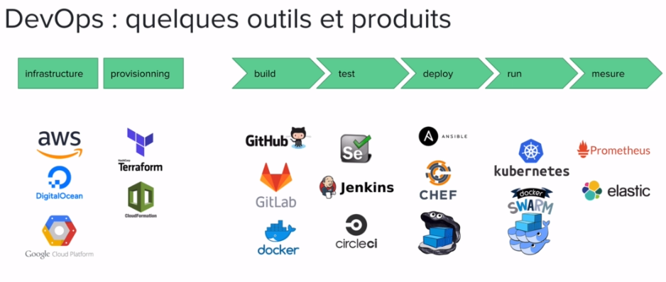

KUBERNETES
1-Introduction
1-1 Architecture micro-services
- Decouplage de l’application en multiples services
- Processus independant ayant sa propre responsabilite metier
- Plus grande liberte de choix dans le langage
- Equipe dediee pour chaque service
- Un service peut etre mis a jour independamment des autres services
- Containers tres adaptes pour les micro-services
- Necessite des interfaces bien definies
- Deplace la complexite dans l’orchestration de l’application globale
1-2Application Cloud Native
- Application orientee microservices
- Packagee dans des containers
- Orchestration dynamique
- Nombreux projets portes par la CNCF (Kubernetes, Prometheus, Fluentd…)
1-3 Les ouils devops
2- La plateforme
Historique
- Kubernetes / K8s / Kube
- “Homme de barre” / “Pilote” en grec
- Plateforme open source d’orchestration de containers
- Inspiree du systeme Borg de Google
- v1.0, juillet 2015
- v1.34, Aout 2025
Fonctionnalites
- Automatise le deploiement, la montee en charge et le management des applications microservices conteneurisees
- Boucle de reconciliation vers l’etat souhaite (self-healing)
- Gestion d’applications stateless(sans persistance de donne) et stateful(avec persistance de donne)
- Orchestration du stockage
- Gestion des Secrets et des Configurations
- Long-running et batch jobs
- RBAC (gestion des droits)
Differentes categories de ressources
Specification des ressources
Labels et Annotations
Communication avec le cluster
Communication avec le cluster
3- Mise en place
3-1Minikube
3-2 :Démmarer le premier container
Nous allons démmarer un container nommé pingpong qui est basé sur l'image alpine
$ kubectl run pingpong --image alpine ping 8.8.8.8
Pour afficher les informations relative à ce container , il suffit de lancer la commande suivante:
$ kubectl get all
NAME READY STATUS RESTARTS AGE
pod/pingpong 0/1 ContainerCreating 0 5s
NAME TYPE CLUSTER-IP EXTERNAL-IP PORT(S) AGE
service/kubernetes ClusterIP 10.96.0.1 443/TCP 4d3h
3 ressource sont crée, deployment + replica + pod
notre application :
- kubectl run crée un "deployment", deploy/pingpong
- Ce "deployment" à une replica set, rs/pingpong-xxxx
- ce "replica set" crée un pod, po/pingpong-yyyy
Pour afficher le log de ce container , il suffit de lancer
$ kubectl logs pod/pingpong
PING 8.8.8.8 (8.8.8.8): 56 data bytes
64 bytes from 8.8.8.8: seq=0 ttl=114 time=23.047 ms
64 bytes from 8.8.8.8: seq=1 ttl=114 time=22.819 ms
64 bytes from 8.8.8.8: seq=2 ttl=114 time=22.509 ms
64 bytes from 8.8.8.8: seq=3 ttl=114 time=22.117 ms
-f/--follow : pour afficher les log en temps réel
--tail : Afficher le nombre des ligne
--since : afficher les logs depuis une durré spécifique
Démmarer un container via fichier YAML (whoami)
podinfo.yaml
apiVersion: v1
kind: Pod
metadata:
name: whoami
spec:
containers:
- name: whoami
image: containous/whoami
Lancer la commande :
$ kubectl apply -f podinfo.yaml
Vérification :
$ kubectl get pods
Accès à l’application via un port-forward
$ kubectl port-forward whoami 8888:80
via un autre consolen ,essayer la commande
[abdou@localhost ~]$ curl localhost:8888
Hostname: whoami
IP: 127.0.0.1
IP: ::1
IP: 10.244.3.5
IP: fe80::d879:caff:fe6d:2f83
RemoteAddr: 127.0.0.1:37628
GET / HTTP/1.1
Host: localhost:8888
User-Agent: curl/7.76.1
Accept: */*
Pour crée d'autre copie, il suffit d'ajouter le parametre "scale"
$ kubectl scale xxx/xxx --replicas 8
[not work]
Suppresion de Pod
$ kubectl delete po/whoami
Details du Pod
$ kubectl describe pod whoami
$ kubectl get pods
Accès à l’application via un port-forward
$ kubectl port-forward whoami 8888:80
via le browser , acces au service [image]
Démmarer un container via fichier YAML (Nginx)
Les commandes de base
kubectl version --short